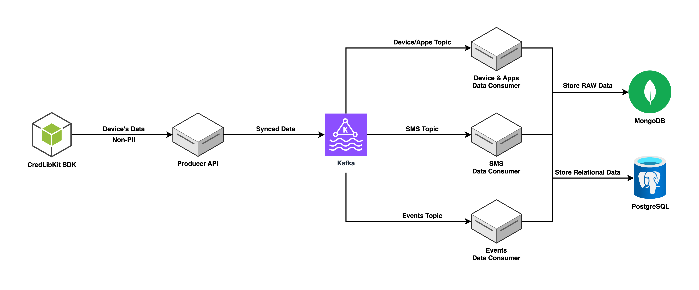

Components¶
MobileForge is built on two primary pipelines — the Sync Pipeline and the Insights Pipeline, each composed of modular services that can be independently scaled and deployed.
Sync Pipeline¶
Responsible for securely ingesting data from mobile devices and storing it for downstream processing.

Components:
-
Producer API: Receives raw data from mobile clients.
-
Kafka Stream: Serves as the backbone for streaming data reliably between services.
-
Data Consumers: Process and store incoming data from Kafka.
- SMS Data Consumer
- Events Data Consumer
- Device/Apps Data Consumer
-
Databases (Write Layer):
- MongoDB: Used for handling unstructured or semi-structured data.
- PostgreSQL: Stores structured and relational data with integrity constraints.
Insights Pipeline¶
Provides APIs for reading, profiling, and deriving insights from the synced data.

Components:
-
Insights API: Delivers processed insights to institutional systems.
-
SMS Extraction API: Extracts relevant financial signals from SMS data.
-
Databases (Read Layer):
- MongoDB: Separate database instance within the same cluster, optimized for read access.
- PostgreSQL: Read-optimized schema for efficient querying and reporting.
Each component is designed to be modular, allowing independent scaling, deployment, and monitoring depending on workload or use-case.